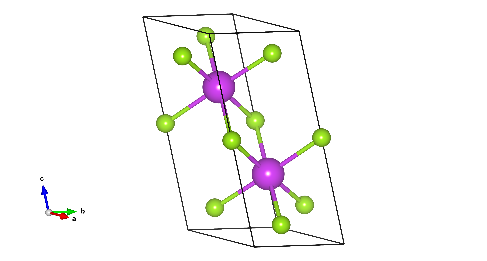
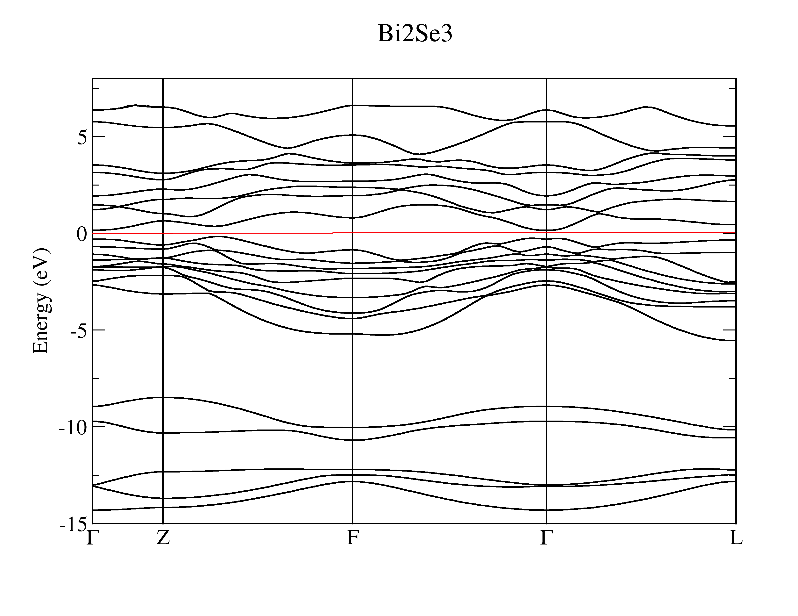
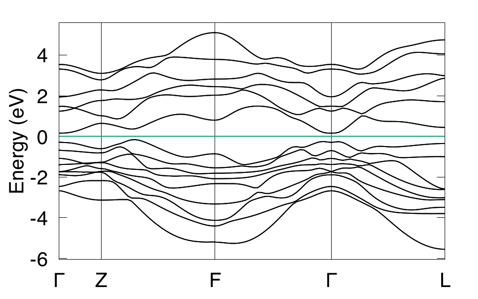
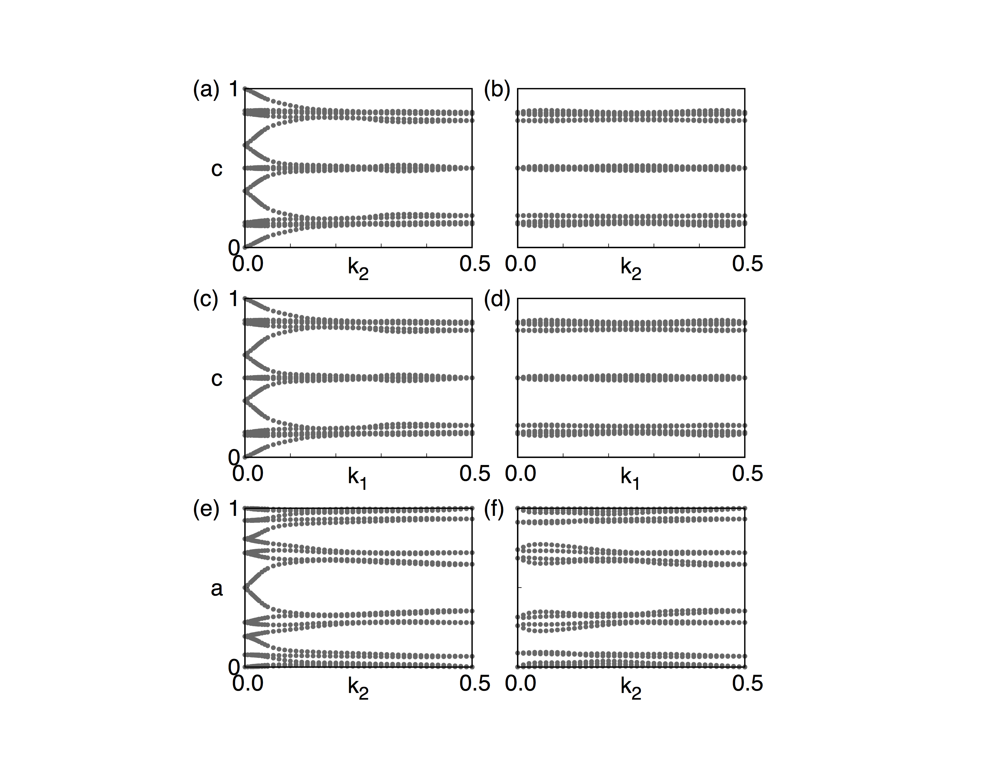
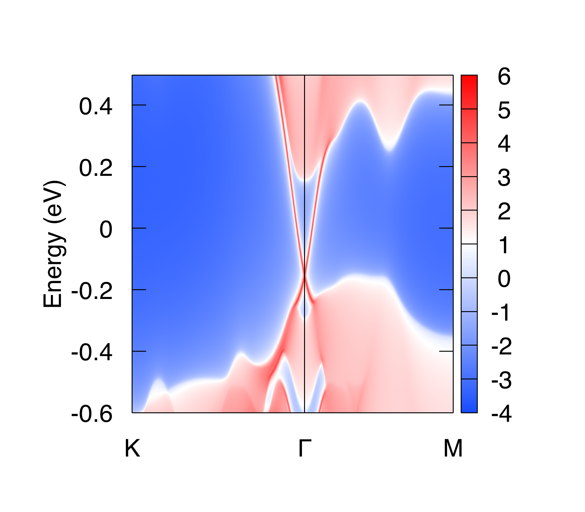
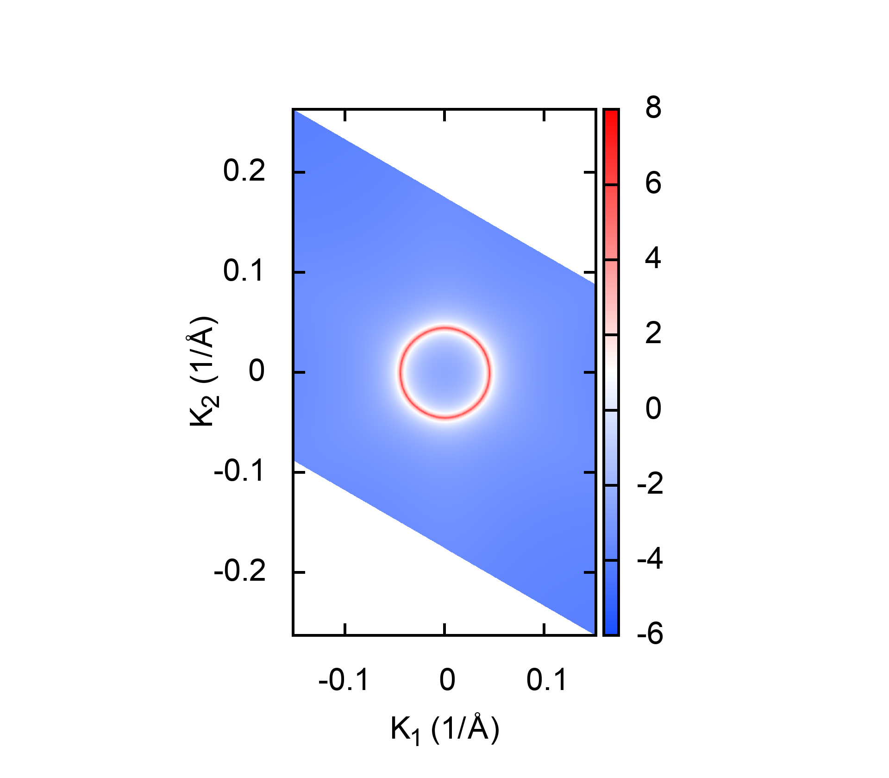
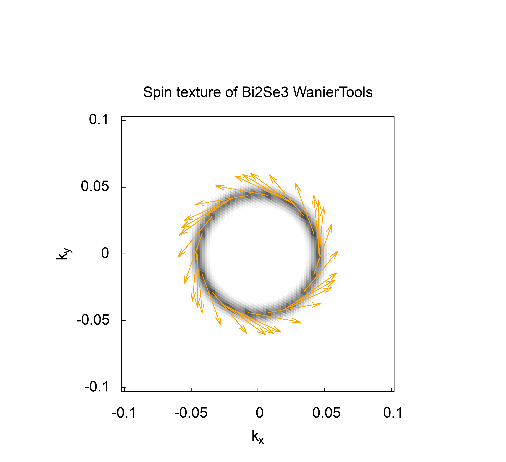

3.1. Bi2Se3 (3D strong TI)#
Bi2Se3 is a strong topological insulator. The Z2 topological index is (1, 000). Theoretical and experimental validation can be found in Nature Physics 5, 438-442 (2009) and Nature Physics 5, 398-402 (2009) respectively. Here we show you how to use WannierTools to study strong topological materials. The input file and some related files are included in each distribution.
Here is the primitive unit cell of Bi2Se3
{kind=link}
3.1.1. First principle calculation#
Firstly, you need to study the electronic structure of Bi2Se3 with first-principle software package, like VASP, Wien2k, Abinit, Quantum-espresso et al. In this tutorial, we select VASP. Here is the calculated band structure.
{kind=link}
3.1.2. Band structure#
Then Wannier90 is applied to construct MLWF tight binding (TB) model (see more details from http://www.wannier.org). Here we only tell you that the p orbitals of Bi and Se are selected as the initial projectors for Wannier90. The band structure calculated from the MLWF-TB model is as follows
{kind=link}
This band structure can be calculated directly from Wannier90. Also can be calculated from WannierTools. The settings in WT.in are
&CONTROL
BulkBand_calc = T
/
&SYSTEM
SOC = 1 ! soc
E_FERMI = 4.4195 ! e-fermi
/
&PARAMETERS
Nk1 = 41 ! number k points odd number would be better
/
KPATH_BULK ! k point path
4 ! number of k line only for bulk band
G 0.00000 0.00000 0.0000 Z 0.00000 0.00000 0.5000
Z 0.00000 0.00000 0.5000 F 0.50000 0.50000 0.0000
F 0.50000 0.50000 0.0000 G 0.00000 0.00000 0.0000
G 0.00000 0.00000 0.0000 L 0.50000 0.00000 0.0000
3.1.3. Z2 topological number#
From the band structure above, it is clear that it is a insulator. This is also can be checked by calculating the density of state (DOS). In order to identify the topological properties, we have to calculate the Z2 topological number, which is valid for time-reversal invariant system with a continuous full gap in the Brilloin Zone. The Z2 topological number for 3D bulk system can be obtained from the calculation of the Wilson loop (Wannier charge center) for the six time-reversal invariant momentum plane. k1=0.0, k1=0.5; k2=0.0; k2=0.5; k3=0.0, k3=0.5. It can be done using WannierTools with setting in WT.in
&CONTROL
Z2_3D_calc = T
/
&SYSTEM
SOC = 1 ! soc
NumOccupied = 18 ! Number of occupied Wannier bands
/
&PARAMETERS
Nk1 = 41 ! number k points odd number would be better
Nk2 = 41 ! number k points odd number would be better
/
The resutls are
{kind=link}
(a) k1=0.0, z2=1; (b) k1=0.5, z2=0; (c) k2=0.0, z2=1; (d) k2=0.5, z2=0; (e) k3=0.0, z2=1; (f) k3=0.5, z2=0;
So the bulk Z2 topological number is (1, 000), which means a strongly topological insulator.
3.1.4. Surface state#
The surface states are the correspondence to the non-trivial bulk topology. They are detectable from ARPES experiments. The calculated surface states of Bi2Se3 on (0001) surface are
 {kind=link}
{kind=link}
The settings in WT.in are
&CONTROL
SlabSS_calc = T
SlabArc_calc = T
/
&SYSTEM
SOC = 1 ! soc
NumOccupied = 18 ! Number of occupied Wannier bands
E_FERMI = 4.4195 ! e-fermi
/
&PARAMETERS
Eta_Arc = 0.001 ! infinite small value, like brodening
E_arc = 0.0 ! energy for calculate Fermi Arc
OmegaMin = -0.6 ! energy interval
OmegaMax = 0.5 ! energy interval
OmegaNum = 401 ! omega number
Nk1 = 101 ! number k points odd number would be better
Nk2 = 101 ! number k points odd number would be better
/
SURFACE ! See doc for details
1 0 0
0 1 0
0 0 1
KPATH_SLAB
2 ! numker of k line for 2D case
K 0.33 0.67 G 0.0 0.0 ! k path for 2D case
G 0.0 0.0 M 0.5 0.5
KPLANE_SLAB
-0.1 -0.1 ! Original point for 2D k plane
0.2 0.0 ! The first vector to define 2D k plane
0.0 0.2 ! The second vector to define 2D k plane for arc plots
3.1.5. Spin texture#
Spin orbital coupling (SOC) is a very important to topological insulator. The spin texture of the surface states will form due to SOC. WannierTools can calculate spin texture like this
{kind=link}
by setting
&CONTROL
SlabSpintexture_calc = F
/
&SYSTEM
SOC = 1 ! soc
E_FERMI = 4.4195 ! e-fermi
/
&PARAMETERS
Eta_Arc = 0.001 ! infinite small value, like brodening
E_arc = 0.0 ! energy for calculate Fermi Arc
Nk1 = 101 ! number k points odd number would be better
Nk2 = 101 ! number k points odd number would be better
/
SURFACE ! See doc for details
1 0 0
0 1 0
0 0 1
KPLANE_SLAB
-0.1 -0.1 ! Original point for 2D k plane
0.2 0.0 ! The first vector to define 2D k plane
0.0 0.2 ! The second vector to define 2D k plane for arc plots
3.1.6. Full settings in WT.in of Bi2Se3#
&TB_FILE
Hrfile = 'wannier90_hr.dat'
/
&CONTROL
BulkBand_calc = T
BulkFS_calc = F
BulkGap_cube_calc = F
BulkGap_plane_calc = F
SlabBand_calc = T
WireBand_calc = F
SlabSS_calc = T
SlabArc_calc = T
SlabQPI_calc = F
Z2_3D_calc = T
Chern_3D_calc = F
SlabSpintexture_calc = F
Wanniercenter_calc = F
BerryPhase_calc = F
BerryCurvature_calc = F
EffectiveMass_calc = F
/
&SYSTEM
NSLAB = 10 ! for thin film system
NSLAB1= 4 ! nanowire system
NSLAB2= 4 ! nanowire system
NumOccupied = 18 ! NumOccupied
SOC = 1 ! soc
E_FERMI = 4.4195 ! e-fermi
Bx= 0, By= 0, Bz= 0 ! Bx By Bz
surf_onsite= 0.0 ! surf_onsite
/
&PARAMETERS
Eta_Arc = 0.001 ! infinite small value, like brodening
E_arc = 0.0 ! energy for calculate Fermi Arc
OmegaNum = 401 ! omega number
OmegaMin = -0.6 ! energy interval
OmegaMax = 0.5 ! energy interval
Nk1 = 41 ! number k points odd number would be better
Nk2 = 41 ! number k points odd number would be better
Nk3 = 21 ! number k points odd number would be better
NP = 1 ! number of principle layers
Gap_threshold = 1.0 ! threshold for GapCube output
/
LATTICE
Angstrom
-2.069 -3.583614 0.000000 ! crystal lattice information
2.069 -3.583614 0.000000
0.000 2.389075 9.546667
ATOM_POSITIONS
5 ! number of atoms for projectors
Direct ! Direct or Cartisen coordinate
Bi 0.3990 0.3990 0.6970
Bi 0.6010 0.6010 0.3030
Se 0 0 0.5
Se 0.2060 0.2060 0.1180
Se 0.7940 0.7940 0.8820
PROJECTORS
3 3 3 3 3 ! number of projectors
Bi px py pz ! projectors
Bi px py pz
Se px py pz
Se px py pz
Se px py pz
SURFACE ! See doc for details
1 0 0
0 1 0
0 0 1
KPATH_BULK ! k point path
4 ! number of k line only for bulk band
G 0.00000 0.00000 0.0000 Z 0.00000 0.00000 0.5000
Z 0.00000 0.00000 0.5000 F 0.50000 0.50000 0.0000
F 0.50000 0.50000 0.0000 G 0.00000 0.00000 0.0000
G 0.00000 0.00000 0.0000 L 0.50000 0.00000 0.0000
KPATH_SLAB
2 ! numker of k line for 2D case
K 0.33 0.67 G 0.0 0.0 ! k path for 2D case
G 0.0 0.0 M 0.5 0.5
KPLANE_SLAB
-0.1 -0.1 ! Original point for 2D k plane
0.2 0.0 ! The first vector to define 2D k plane
0.0 0.2 ! The second vector to define 2D k plane for arc plots
KPLANE_BULK
0.00 0.00 0.50 ! Original point for 3D k plane k3=0.5, bar{a}, along k1
1.00 0.00 0.00 ! The first vector to define 3d k space plane
0.00 0.50 0.00 ! The second vector to define 3d k space plane
!> The following 5 matrices are for backup using, will not affect the main input for WannierTools
0.00 0.00 0.00 ! Original point for 3D k plane k3=0.0, bar{a}, along k1
1.00 0.00 0.00 ! The first vector to define 3d k space plane
0.00 0.50 0.00 ! The second vector to define 3d k space plane
0.00 0.50 0.00 ! Original point for 3D k plane k2=0.5, bar{c}, along ka
0.00 0.00 1.00 ! The first vector to define 3d k space plane
0.50 0.00 0.00 ! The second vector to define 3d k space plane
0.00 0.00 0.00 ! Original point for 3D k plane k2=0, bar{c}, along ka
0.00 0.00 1.00 ! The first vector to define 3d k space plane
0.50 0.00 0.00 ! The second vector to define 3d k space plane
0.50 0.00 0.00 ! Original point for 3D k plane k1=0.5, bar{c}, along kb
0.00 0.00 1.00 ! The first vector to define 3d k space plane
0.00 0.50 0.00 ! The second vector to define 3d k space plane
0.00 0.00 0.00 ! Original point for 3D k plane k1=0, bar{c}, along kb
0.00 0.00 1.00 ! The first vector to define 3d k space plane
0.00 0.50 0.00 ! The second vector to define 3d k space plane
KCUBE_BULK
-0.50 -0.50 -0.50 ! Original point for 3D k plane
1.00 0.00 0.00 ! The first vector to define 3d k space plane
0.00 1.00 0.00 ! The second vector to define 3d k space plane
0.00 0.00 1.00 ! The third vector to define 3d k cube
EFFECTIVE_MASS ! optional
2 ! The i'th band to be calculated
0.01 ! k step in unit of (1/Angstrom)
0.0 0.0 0.0 ! k point where the effective mass calculated.
WANNIER_CENTRES ! copy from wannier90.wout
Cartesian
-0.000040 -1.194745 6.638646
0.000038 -1.196699 6.640059
-0.000032 -1.192363 6.640243
-0.000086 -3.583414 2.908040
0.000047 -3.581457 2.906587
-0.000033 -3.585864 2.906443
-0.000001 1.194527 4.773338
0.000003 1.194538 4.773336
-0.000037 1.194536 4.773327
0.000006 -1.194384 1.130261
-0.000018 -1.216986 1.140267
0.000007 -1.172216 1.140684
0.000011 -3.583770 8.416406
-0.000002 -3.561169 8.406398
-0.000007 -3.605960 8.405979
0.000086 -1.194737 6.638626
-0.000047 -1.196693 6.640080
0.000033 -1.192286 6.640223
0.000040 -3.583406 2.908021
-0.000038 -3.581452 2.906608
0.000032 -3.585788 2.906424
0.000001 1.194548 4.773330
-0.000003 1.194537 4.773332
0.000037 1.194539 4.773340
-0.000011 -1.194381 1.130260
0.000002 -1.216981 1.140268
0.000007 -1.172191 1.140687
-0.000006 -3.583766 8.416405
0.000018 -3.561165 8.406400
-0.000007 -3.605935 8.405982